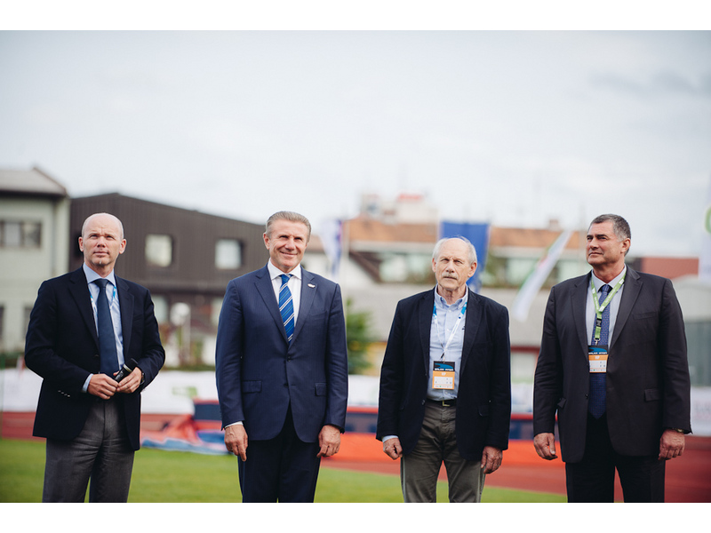

Balkan Athletics Congress&Balkanation
20 September 2014, Ljubljana
The Association of Balkan Athletic Federations (ABAF) had its regular Congress on 20 September 2014 in Slovenian Capital Ljubljna.
Along with representatives of all 15 member federations the Congress was attended by withIAAF Vice President Sergey Bubka, European Athletics PresidentHansjorgWirtz, Ahmad Al Kamali, IAAF Council Member, GeanGracia, European Athletics Vice President, AnttiPihlakoski and Jonas Eglisson, European Athletics Council Members and other distinguished guests.

Balkan Athletics President DobromirKaramarinov received a special award from HanjorgWirz for his contribution to the development of athletics on the Balkans. "A movement like yours is becoming very important. Many of your members are organising European activities. Tere was never so much contribution from your region. Your structure is doing a great job because it covers the whole range of activities" Wirz said.

The congress reviewed the upcoming events, addressed issues related to the ABAF Competition Regulations and Statutes and approved the Balkan Athletics Calendar for 2015.
Later on the same day a new meeting named Balkanation took place in Ljubljana. The Balkanation is a team competition introduced by Slovenian Athletic federation which ended the athletics season in Europe. It promoted team spirit and team fellowship, power and speed. Sixteen athletics were staged with specific regulations in some of them. For instance regulations of the European Team Championships were adopted in vertical jump, where each athlete was allowed no more than four fouls throughout the competition. Points were awarded to each athlete according to his/her position and the number of athletes in the respective event. Each team could also use a "Joker" bonus - double number of points at one event, previously indicated by the team leader.

Eight Balkan countries took place in the first edition of the Balkanation. The overall winner was the host team of Slovenia followed by Croatia and Turkey.
Full results can be found HERE
More pictures are available in the gallery of Slovenian Athletic Federation.